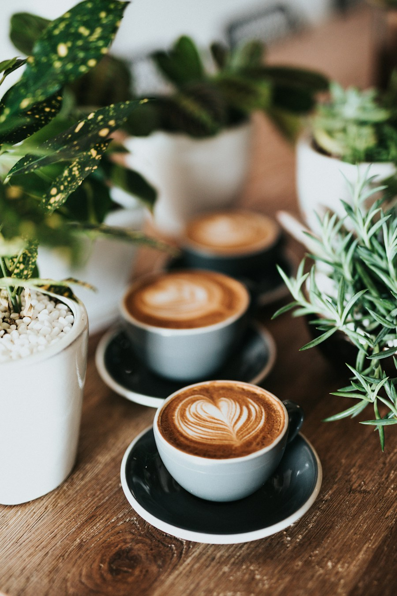

Káva, ktorá
zobudí deň
Pražíme vlastné zrná a pečieme každé ráno. Príď si sadnúť, nikam sa neponáhľaj.
Pozri menuZrnko
Pražíme vlastné zrná a pečieme každé ráno. Príď si sadnúť, nikam sa neponáhľaj.
Pozri menu